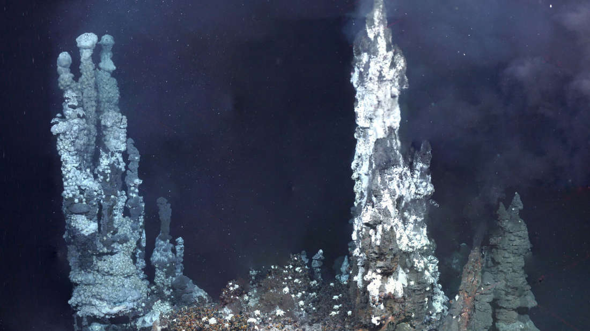

The Chemical That Bleaches Your Hair May Have Been The Essential Ingredient For Life

It's time to pay more respect to hydrogen peroxide (H2O2). The chemical mostly known for
stripping hair of color and bad chemistry jokes has a number of features that could have
allowed it to give life its start, biochemists have argued.
“The origin of life is one of the hardest problems in all of science, but it is also one of the most important,” said the Australian National University's Dr Rowena Ball in a statement. Many theories, most often contradictory, have been proposed.
Ball has previously argued that hydrogen peroxide, as the simplest chiral molecule, i.e. one that can't be superimposed on its mirror image, could have triggered one of the more curious features of life – all nucleotides in living things have a common form.
In a new paper in Royal Society Open Science, Ball points out that hydrogen peroxide has other features that suit it to being the spark that ignited life. For one thing, she explained to IFLScience, it is a thermochemical oscillator. When H2O2 oxidizes certain chemicals it produces swings in both temperature and acidity.
This is very useful for life's formation because, Ball said; “The system needs to spend enough time at higher temperatures to carry out essential synthetic reactions, but not so much that the reactants are totally consumed or destroyed.” Alternative theories for life's appearance suggest temperature variations were produced externally, for example as currents swept volcanic heat in changing directions. However, Ball sees the local fluctuations from hydrogen peroxide as a better fit.
Ball believes H2O2 worked its magic in long thin pores within rocks around hydrothermal vents, where the rock shape helped to build long polymers out of amino acids, making the chains that became RNA.
If life required hydrogen peroxide to appear, it would explain why it only emerged once. Although some scientists hypothesize a “shadow biosphere” of life forms so different from ourselves we do not recognize them as alive, all the evidence we have is that all life on Earth emerged from a single source, the question is why?
“Although hydrogen peroxide powered and mediated life's origins, in large quantities it is toxic to cells,” Ball told IFLScience. Consequently living things created enzymes called catalases that destroy H2O2, and once early life forms spread widely enough, they destroyed the molecules that could have sparked a second appearance. Ball compares this to evolution burning behind it the bridge “that spanned the living and non-living molecular worlds.”
Ball described her theory as “highly compatible” with one published this week that proposes a major role for the chemical diamidophosphate, and hopes future work will combine them, but it contradicts those that propose a role for asteroid impacts.
“The origin of life is one of the hardest problems in all of science, but it is also one of the most important,” said the Australian National University's Dr Rowena Ball in a statement. Many theories, most often contradictory, have been proposed.
Ball has previously argued that hydrogen peroxide, as the simplest chiral molecule, i.e. one that can't be superimposed on its mirror image, could have triggered one of the more curious features of life – all nucleotides in living things have a common form.
In a new paper in Royal Society Open Science, Ball points out that hydrogen peroxide has other features that suit it to being the spark that ignited life. For one thing, she explained to IFLScience, it is a thermochemical oscillator. When H2O2 oxidizes certain chemicals it produces swings in both temperature and acidity.
This is very useful for life's formation because, Ball said; “The system needs to spend enough time at higher temperatures to carry out essential synthetic reactions, but not so much that the reactants are totally consumed or destroyed.” Alternative theories for life's appearance suggest temperature variations were produced externally, for example as currents swept volcanic heat in changing directions. However, Ball sees the local fluctuations from hydrogen peroxide as a better fit.
Ball believes H2O2 worked its magic in long thin pores within rocks around hydrothermal vents, where the rock shape helped to build long polymers out of amino acids, making the chains that became RNA.
If life required hydrogen peroxide to appear, it would explain why it only emerged once. Although some scientists hypothesize a “shadow biosphere” of life forms so different from ourselves we do not recognize them as alive, all the evidence we have is that all life on Earth emerged from a single source, the question is why?
“Although hydrogen peroxide powered and mediated life's origins, in large quantities it is toxic to cells,” Ball told IFLScience. Consequently living things created enzymes called catalases that destroy H2O2, and once early life forms spread widely enough, they destroyed the molecules that could have sparked a second appearance. Ball compares this to evolution burning behind it the bridge “that spanned the living and non-living molecular worlds.”
Ball described her theory as “highly compatible” with one published this week that proposes a major role for the chemical diamidophosphate, and hopes future work will combine them, but it contradicts those that propose a role for asteroid impacts.
By Stephen Luntz